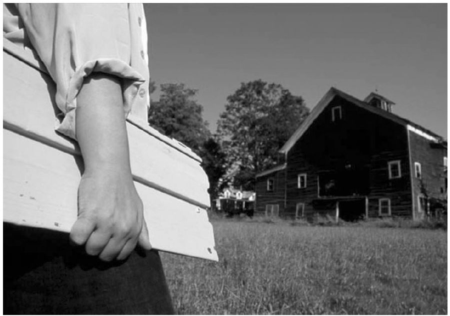

19世纪的最后几年出现了最早的几部影片，也宣告了纪录片这一体裁的诞生。它的形式很多样：可以是对异域风景和生活的寻访，如《北方的纳努克》（1922）；可以是一首视觉诗，如约里斯·伊文思的《雨》（1929）——一个关于雨天的故事，配上一曲古典的音乐，风暴的节奏与音乐的结构刚好吻合；也可以是一项艺术化的宣传。苏联纪录片制作人济加·韦尔托夫曾热烈地宣称，故事片是有害的，正在迈向死亡，而纪录片才是未来的趋势；他制作的《持摄像机的人》（1929），不仅仅宣传了一个政权，也宣传了纪录片这一电影形式。
什么是纪录片？一个简单而传统的回答是：它不是电影。至少不是《星球大战》那样的电影。但院线纪录片又是个例外，比如《华氏9·11》（2004），它打破了纪录片的票房纪录。另一个简单而常见的回答是：它是不好玩的电影，严肃的电影，想要教育你一些事情的电影——但斯泰西·佩拉尔塔的《巨浪骑士》（2004）又是个例外，因为它以一种惊险刺激的方式向观众展示了冲浪的历史。很多纪录片都很聪明，它们明确地以娱乐观众为目的而制作。的确，大多数纪录片制作人都认为他们自己的任务是讲故事，而不是写新闻。
一个简单的回答可以是这样：纪录片是关于真实生活的电影。这却正是问题的所在。纪录片是关于 生活的影片，但它们却不是真实生活。人们甚至不能通过纪录片看到真实生活。纪录片是关于真实生活的图画，以真实生活为它们的原材料，艺术家和技术人员对这些原材料进行加工、作出不计其数的决定：要给哪些人看、要展示什么样的故事、展示的目的是什么。
那么你也许会这么说：纪录片是一种尽力再现真实生活却不试图对生活加以操纵的影片。但是，制作电影时不对信息加以操纵是不可能的。选材、编辑、音效都是操纵。广播电视新闻记者爱德华·R.默罗曾经说过：“如果有人以为每一部电影都必须再现一幅‘平衡’的画面，那他既不了解什么是平衡，也不了解什么是电影。”
自从有了纪录片，就有了在多大程度上操纵信息这一问题。《北方的纳努克》被公认为是最优秀的早期纪录片之一，但影片中的主角因纽特人却在制作人罗伯特·弗莱厄蒂的导演下，担任了类似于故事片中演员的角色。弗莱厄蒂要求他们展现自己已经不再从事的活动，比如用长矛捕捉海象，让他们对明明知道的事情表现出不懂的样子。影片中的角色“纳努克”——这不是他的真名——愉悦而困惑地对着留声机唱片咬上去；而实际上此人对现代仪器了如指掌，甚至还经常帮着弗莱厄蒂拆卸和组装摄像机。另外，弗莱厄蒂的影片故事框架来源于他与因纽特人多年共同生活的经历，而这些因纽特人也欣然参与了影片制作，并为情节设计提供了很多灵感。
纪录片讲述关于真实生活的故事，并宣称自身的真实性。怎样才能以真心诚意来完成这一目标，讨论永无止境，答案也五花八门。随着时间的流逝，纪录片不仅仅被制作人，也被观众一再重新定义。观众无疑塑造着一切纪录片的意义，因为我们会将自己对于世界的知识和兴趣与影片制作人向我们展示的一切相联系。观众对影片的期待也以先前的观影经验为基础，我们不希望被玩弄和欺骗。我们希望看到关于真实世界的一切，也希望看到真实的一切。
我们并不要求这一切客观地呈现在我们面前，也不要求它们是全部的真相。纪录片制作人可以时不时地运用诗意的手段，用象征的手法展现现实（比如，用罗马斗兽场的画面来代表一次欧洲度假之旅）。但是，我们的的确确希望一部纪录片公正、诚实地再现某人对于现实的经验。这就是迈克尔·雷比格老师在他的经典教材里曾提到过的、制作人与观众的契约：“纪录片这一年轻的艺术形式中没有规则，只有一系列的决定：决定你的底线在哪里，决定怎样遵守你将与观众订立的契约。”
术语
“纪录片”这一术语是在早期的拍摄实践中尴尬地诞生的。19世纪末，制作人们刚刚开始对实况事件进行影片录制时，一些人将他们的这些作品称为“纪录片”。不过，这一术语直到几十年后才成为固定的名称。当时，另一些人将他们的影片称作“教育片”、“实况片”、“趣味片”，或者以主题来称呼他们的作品，如“旅行片”。苏格兰导演约翰·格里尔森决定将这种新的艺术形式用来为英国政府服务。他将杰出的美国纪录片制作人罗伯特·弗莱厄蒂的《摩拉湾》（1926）——一部记录南太平洋某座岛屿上的日常生活的影片——称为“纪录片”，从而创制了这个词语。格里尔森将纪录片定义为“对于现实的艺术化再现”——事实证明这一定义经受住了时间的考验，因为这一表述本身颇具灵活性。
市场压力也会对什么样的影片被归类为纪录片产生影响。哲人制片人埃罗尔·莫里斯的《细细的蓝线》（1988）在影院上映时，专业的宣传人员因票房的原因故意淡化了“纪录片”的概念。这部影片是一个复杂的侦探故事——兰达尔·亚当斯到底有没有在得克萨斯州犯下导致他后来被判死刑的罪行？这部影片反映出关键证人证词的可疑。该案后来重审时，该片被呈为证据，这时，影片的性质就忽然变得重要了，此时莫里斯就必须肯定这确实是一部纪录片。
一个相反的例子是迈克尔·莫尔的第一部故事片《罗杰和我》（1989）。该片无情地控诉通用汽车公司，指出其加剧了密歇根州钢铁城弗林特的衰落，这也是一部杰出的黑色幽默影片，最初它却被称作纪录片。但当记者哈兰·雅各布森指出莫尔在影片中错误地再现了事件的时间顺序时，莫尔就避开了“纪录片”这个词。他声称这不是一部纪录片而是一部电影，是一种娱乐形式，与严格的时间顺序有出入是为了表现主题，在所难免。
20世纪90年代，纪录片开始成为全球范围内的大产业。到2004年为止，全球电视纪录片产业的年收入合计就有45亿美元。真人秀节目和“纪实性电视剧”——一种基于真实生活的迷你剧，场景设在潜在戏剧冲突较多的场所：驾校、饭店、医院和机场——也开始蓬勃发展。院线纪录片的票房收入在21世纪的最初几年成倍增长。纪录片的DVD销售、视频点播和租赁都成为大买卖。很快人们又在制作可以在手机上观看的纪录片，并在互联网上协同制作纪录片。那些曾经有意隐瞒自己的电影是纪录片的营销者们，又开始自豪地将其作品称为“纪录片”。
为何如此重要
命名很重要。名称给人以期待；如果事实不是如此，营销者们不会将它作为卖点。纪录片的真实性、准确性和可信赖性对我们所有人来说都很重要，因为这些特质正是我们看重纪录片真正的、独一无二的原因。如果纪录片是骗人的，那它们不仅仅是欺骗了观众，也欺骗了那些依据从影片中拾得的一知半解行事的民众。纪录片作为媒体的一部分，帮助我们理解这个世界，也帮助我们理解自己在这个世界中扮演的角色，塑造我们作为公众演员的形象。
因此，纪录片的重要性就和作为社会现象的公众的概念联系了起来。哲学家约翰·杜威曾有力地提出：公众——这个对民主社会的健康发展至关重要的群体——绝不仅仅是个体的相加。公众是一群能够为了公共利益而集体行动的人，因此也可以承担经营和管理的重大职权。它是一个非正式的群体，却可以在危机时刻应要求凝聚起来。有多少不同的场合和事件，就会应运而生多少公众群体。只要我们有办法彼此沟通、分担彼此共同面对的问题，我们都可以是任何特定的公众群体的一员。因此，沟通是公众群体的灵魂。
传播学学者詹姆斯·卡赖曾指出：“现实是一种稀缺的资源。”现实不是我们周围的一切 ，而是我们所知道 、理解 和彼此分享 的周围的一切。媒体能够作用于最昂贵的不动产，即我们大脑中的现实。纪录片是塑造现实的重要传播手段，因为它宣扬自己的真实性。纪录片总是植根于现实生活，并且宣称它所向我们展示的事情值得一看。
的确，娱乐消费者是电影制造业的重要方面，即便对于纪录片来说也是如此。大多数的纪录片制作人都会售卖自己的作品，要么卖给观众，要么卖给中介方，比如广播公司或经销机构。他们受到自身商业模式的限制。虽然制作纪录片比制作故事片的成本要低得多，但仍然比制作宣传册、手册之类的东西花钱多。电视和院线纪录片常常需要投资者或一些机构为其提供赞助。而且，随着纪录片变得空前流行，越来越多的纪录片是为取悦观众而制作，并不对固有思维提出挑战。它们以煽情、性和暴力等最灵验的手段吸引和娱乐观众。院线上映的野生动物纪录片如《帝企鹅日记》（2005）是娱乐消费者的经典例子；它运用了以上三种手段来吸引和刺激观众，虽然这些现象是出现在动物身上。
受雇的宣传家也利用纪录片这一体裁号称真实的特点，让其成为政府和商业的宣传工具。这样的行为可能会带来灾难性的社会后果，一些纳粹宣传片，如居心叵测的反犹纪录片《永恒的犹太人》（1937）就是如此。宣传片也可能促成重要的积极转变。罗斯福政府向美国人推广昂贵的政府新项目时，就让佩尔·洛伦茨以及一个极具才华的团队制作了一些当时最具影响力的视觉诗歌纪录片。《开垦平原的犁》（1936）和《河流》（1938）等纪录片说服纳税人投资，促进了经济的稳定和发展。
不过，在短短的历史中，纪录片常常由那些位于主流媒体边缘的人制作。他们和公共广播等公共媒体机构、热衷于获奖的商业广播公司、非营利性机构、私人基金或公共教育基金合作。很多纪录片踩在主流媒体的边缘，采取一种稍稍不同的解读现实的方式，努力想要真实地展现关于权力的话题——也与权力对话。它们常将自己视作公众演员，不仅仅对着观众说话，也对着公众群体中的其他成员说话——他们需要知情才能行动起来。
我们可以用最近的一些影片作为例子，证明纪录片的影响范围之广。勇敢新电影推出的《沃尔玛：廉价商品的高昂成本》（2005）就是一部慷慨激昂、说教味很浓的纪录片，意在批判大型零售超市的一些做法，比如克扣员工的医疗保险、恶意整垮小型商业等。该片没有力求平衡地展现沃尔玛的视角。但它的确力求准确地再现问题所在。该纪录片的制作目的就是呼吁行动；人们利用这部片子，针对该公司最严重的那些剥削行为组织立法规范和社会抵制活动。沃尔玛以攻击广告的形式对该片进行了猛烈的抵制，影片制作人则对沃尔玛进行了回击，称其信息不准确。博客写手，甚至主流媒体都加入了这场论争。勇敢新电影将自己放在代表公众发言的位置，填补了主流媒体对这一问题报道的空白。这部电影的大多数观众都是以DVD电邮租赁的方式观看的。受到电邮宣传的影响，他们认为该片不是娱乐片，而是以娱乐为形式对一个重要的公共问题提出了看法。
迈克尔·莫尔的《华氏9·11》，一部尖锐的、反伊拉克战争的影片，则是直接告诉美国公众，他们的政府正在以公众的名义发动战争。商业媒体上的右翼评论家们试图诋毁这部电影，攻击其只不过是宣传工具。但莫尔并不像宣传家们那样只是权势人物的奴才。他只是针对一个大家共同面对的问题提出自己的观点，坦率地表达自己的立场，而他也完全有权利这么做。不仅如此，他还激励观众用批判的眼光审视政府的言论和行动。（不过，他在表现工薪阶级的愤怒方面显得过于小心翼翼，会让观众觉得自己不是社会演员，而是权势压迫下手无寸铁的受害者，这一点可能会削弱影片的激励作用。）
近年来，还有另外一些为让公众知情和行动起来的纪录片，它们运用了各种手段来跨越不同信念之间的鸿沟，以吸引观众的兴趣。尤金·亚雷茨基的《我们为何而战》（2005）展现了一个论点，即政客、大型商业和军队之间相互勾结，以公众的钱财和生命为代价去打一场根本不需要打的战争。亚雷茨基有意将镜头对准了一些能够摒弃党派政治的偏见和为公众利益说话的共和党人士。戴维斯·古根海姆的《难以忽视的真相》（2006）中，阿尔·戈尔 [1] 和戴维斯·古根海姆用一场简单易懂的报告，以科学数据来说明情形的紧迫性。美国宇航局哥达德太空研究所的所长吉姆·汉森评价了这部作品的社会价值：“阿尔·戈尔对于解决全球变暖问题的贡献，不亚于《寂静的春天》 [2] 对于解决滥用杀虫剂问题的贡献。他会受到攻击，但公众因此而知情，他们需要这些情况来区分我们的长远幸福和眼前的某些利益。”
为了达到让公众参与这一最终目的，各种纪录片所采取的形式可以是迥然不同的。朱迪思·赫尔方和丹·戈尔德的《乙烯浩劫》（2002）用日记的形式来从个人视角呈现问题。影片跟随赫尔方的视角：她在自己父母家拿了一块聚氯乙烯制成的墙板，发现了聚氯乙烯在生产和回收处理中均会释放致癌的毒性（会产生二噁英）。赫尔方在片中成了公众的代表——公众需要廉价的墙板，却因为使用这样的墙板而吞下健康受损的苦果。巴西导演何塞·帕迪利亚的《巴士174事件》（2002）讲述了里约热内卢一桩轰动的新闻——一辆巴士被劫持，僵局持续了几个小时，最后劫持者和一名乘客死亡，过程通过电视直播。影片让观众看到了劫持者的生活，也看到了警方所面临的挑战。一面是电视直播让观众在电视机前坐了一整天，一面是对事件背后的故事展开调查，纪录片通过将这两方面进行对比，重塑了这则新闻，意在表现社会问题被炒作为看点的情形是多么普遍和多么可怕。由芬兰导演皮尔约·洪卡萨洛执导的《三个忧郁的房间》（2005）则有着史诗般的沉思，用三个情感故事向观众展示了车臣战争。在第一部分“渴望”中，她将怜悯的镜头对准了一群12岁的孩子们，他们在圣彼得堡的军校受训，为与车臣作战作准备。在第二部分“呼吸”中，一位当地社工走访围困中的格罗兹尼民众，这些人的家中困苦不堪，日常生计问题都无法解决。第三部分“记忆”的场景设在边境的一个孤儿院，这里，车臣的孩子们饱尝艰辛。片中的语言非常之少，而长长的特写镜头下那些困惑、痛苦、坚忍的脸庞，却传达出丰富的信息。观众和摄像机在理解故事上达成了默契。

图1 《乙烯浩劫》用个人文字的方式探究社会问题。朱迪思·赫尔方手持郊区家中的一块乙烯墙板，考察了聚氯乙烯生产中释放的毒性。丹·戈尔德和朱迪思·赫尔方导演，2002年
纪录片总是会以意想不到的方式被运用，而不管制作人的本意是不是向观众传达某些信息。《意志的胜利》（1935）是历史上最声名狼藉的宣传纪录片之一，却长期以来一直出现在其他纪录片、反纳粹宣传片和历史片中。以色列导演约阿夫·沙米尔的《一步一关卡》（2003）用审慎的镜头，不带旁白地记录了以色列军队对巴勒斯坦人的过境检查行为，影片的制作和播放是为了激起公众对违反人权行为的讨论。但以色列军队却对其欣然接受，并将其作为培训影片。
我们对于什么是纪录片的共同理解，建立在我们的观影经验之上，这样的理解又会随着时间的推移、商业和市场的压力、技术和影片形式的创新以及热烈的争议而转变。纪录片这一体裁一直有两个相互冲突的关键元素：再现与现实。和所有影片制作人一样，纪录片的制作人操纵、扭曲现实，但他们仍然声称他们真实地再现了现实。在纪录片的历史上，制作人、评论家和观众一直在争论这一问题：怎样才是以值得信任的方式讲述关于现实的故事。这本书将带领你了解这些争论的历史及其在一些热门的纪录片子类目中的体现。